pajaros ← 0032 Bent Over Rear Deltoid Raise With Head On Bench
pajaros ← 0023 Lying Rear Lateral Raise
press_hombro_manc ← 0038 One Arm Dumbbell Shoulder Press
press_hombro_manc ← 0031 Incline Shoulder Press Dumbbell
smith_hombro ← 0004 Seated Military Press
press_hombro_maq ← 0004 Seated Military Press
laterales ← 0018 Lateral Dumbbell Raises

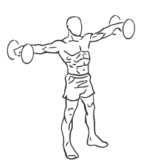
lateral_polea ← 0017 Bent-over Lateral Cable Raises
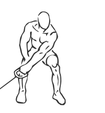
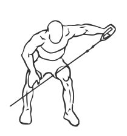
curl_manc ← 0224 Biceps Curl: Dumbbell
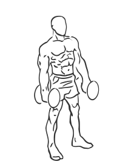
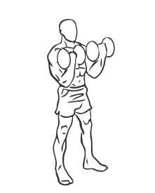
curl_manc ← 0223 Alternating Bicep Curl with Dumbbell
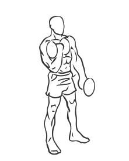
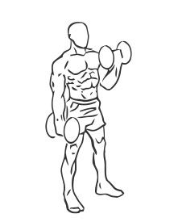
martillo ← 0227 Biceps Curl: Dumbbell (Hammer)
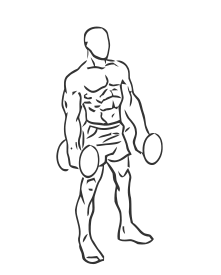
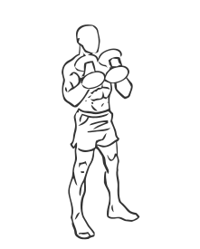
martillo ← 0213 Alternating Hammer Curl with Dumbbell
curl_polea ← 0212 Standing Biceps Curl with Cable
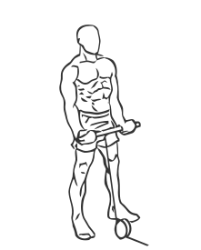
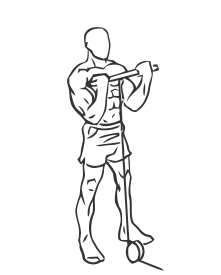
curl_cuerda ← 0216 Hammer Curls with Rope and Cable
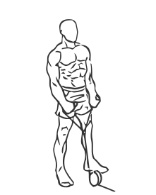

curl_maq ← 0236 Preacher Curl: Machine
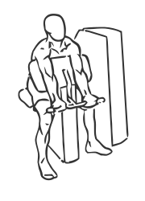
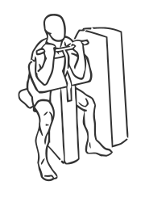
curl_maq ← 0253 Biceps Curl: Machine
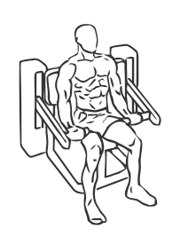
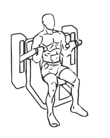
curl_barra ← 0211 Biceps Curl: Barbell
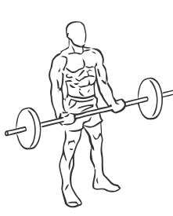

triceps_cuerda ← 0206 Triceps Pushdown: Cable (Rope)
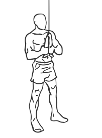
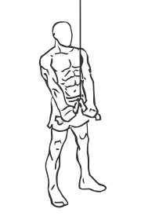
triceps_barra ← 0205 Triceps Pushdown: Cable

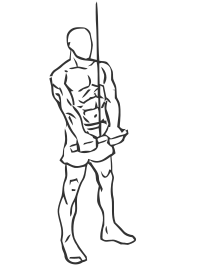
triceps_cabeza ← 0164 Triceps Extension: Cable (Incline)
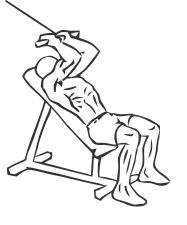
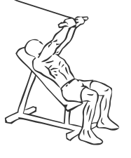
triceps_cabeza ← 0177 Triceps Extension: Cable (Kneeling)
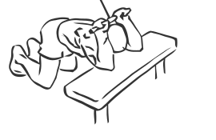
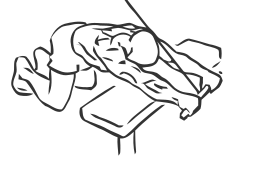
triceps_cabeza ← 0178 Triceps Extension: Cable (Low)
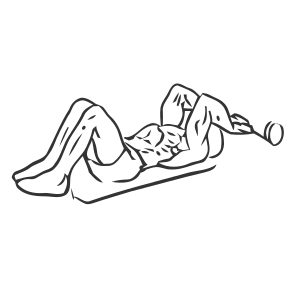
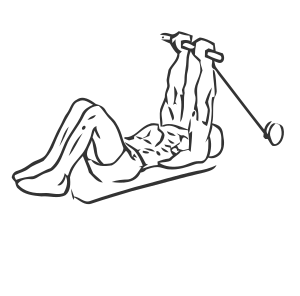
triceps_manc ← 0198 Triceps Extension: Dumbbell (Standing)
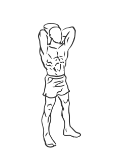
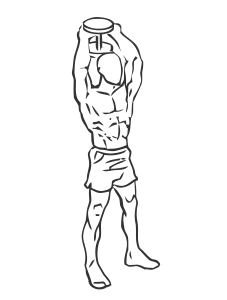
triceps_manc ← 0192 Triceps Extension: Dumbbell (Seated, Two Arm)
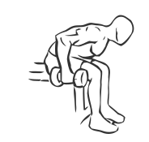
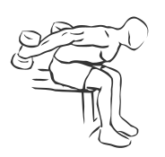